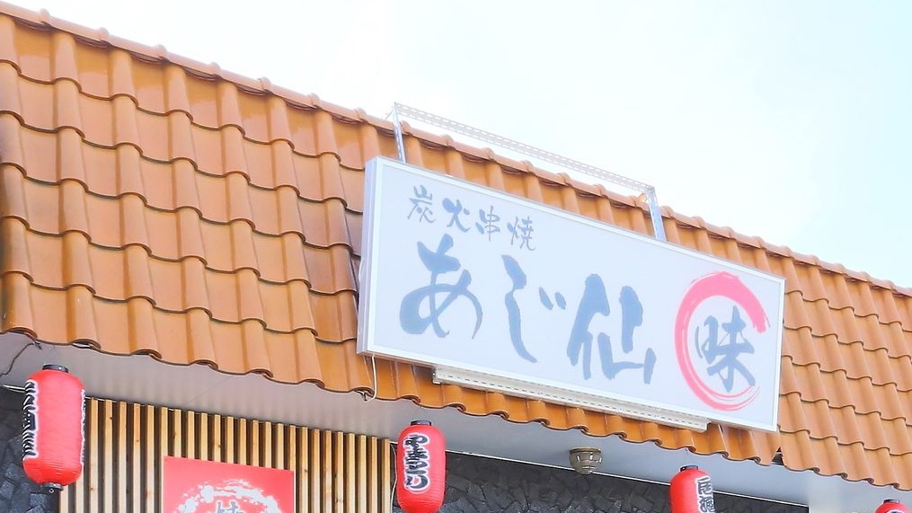
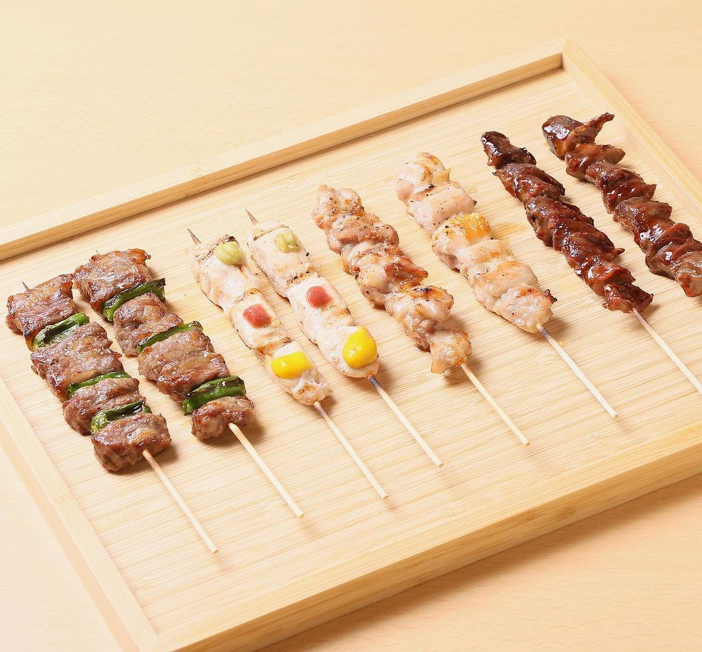
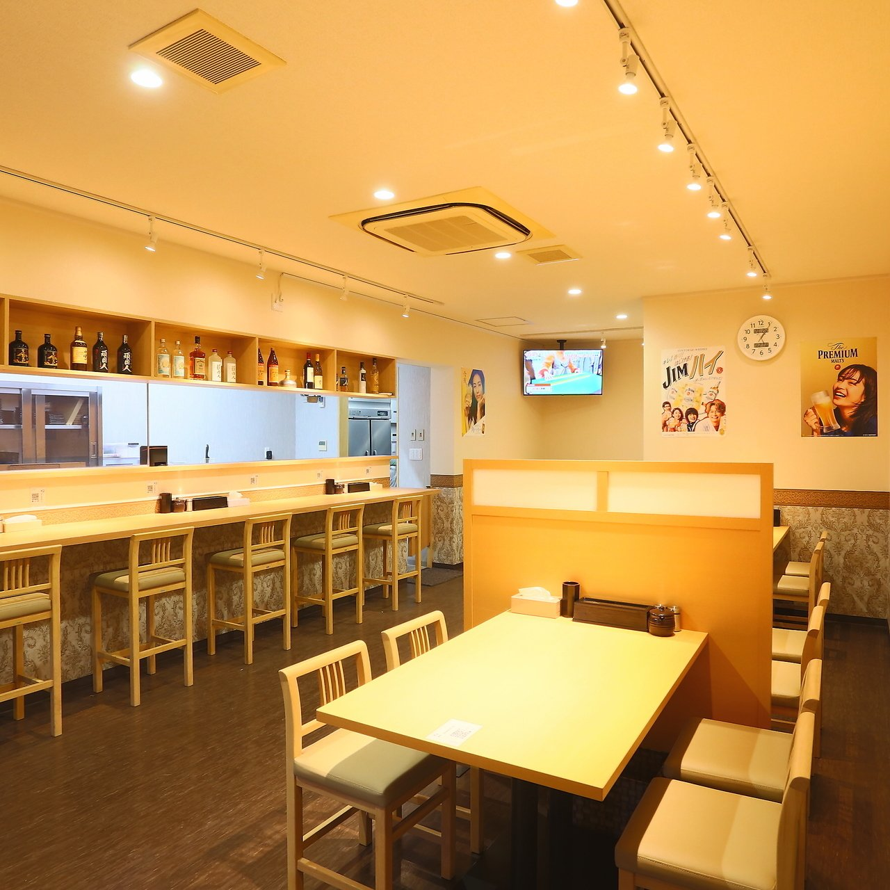
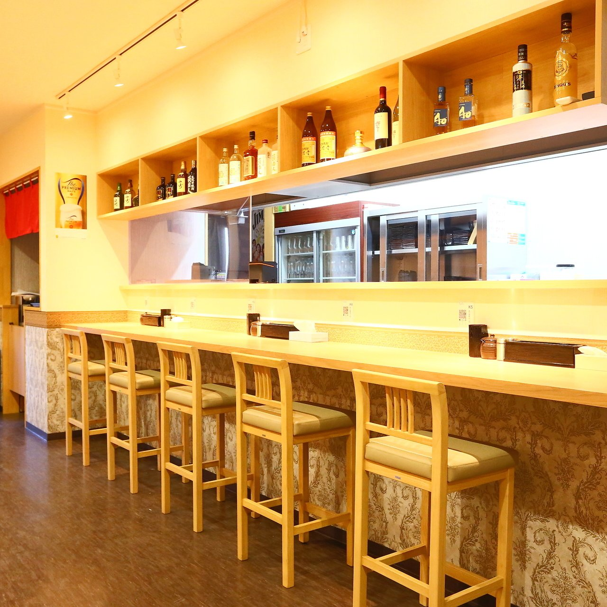
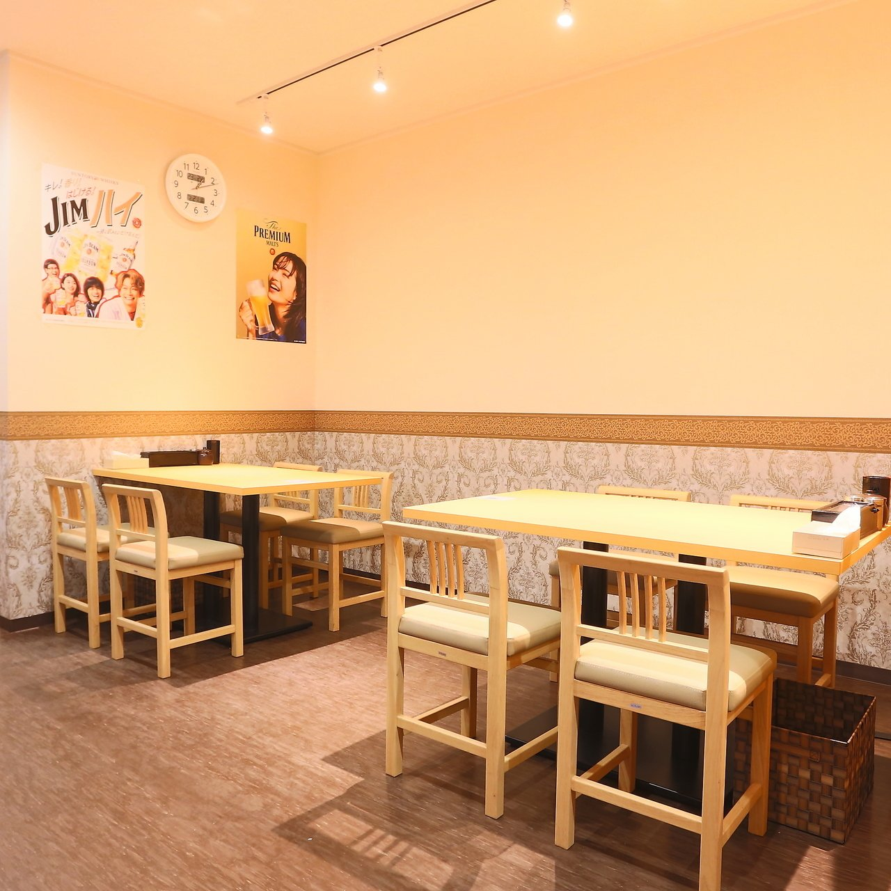
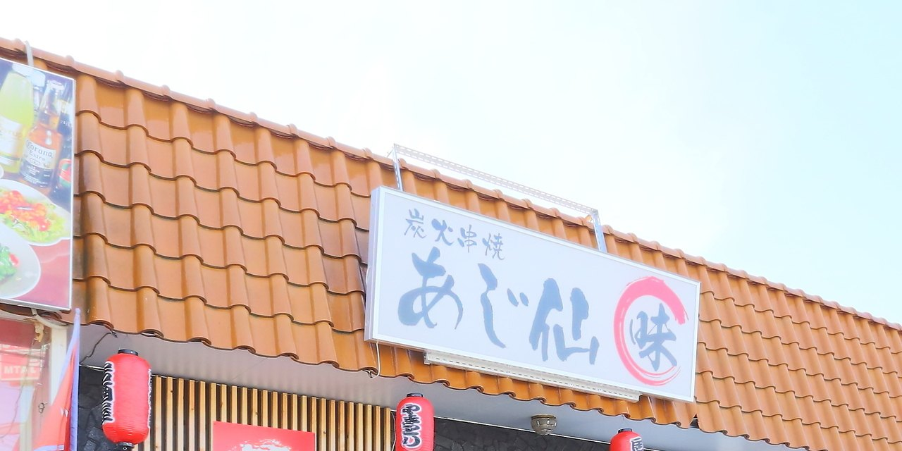

今夜の一軒に、この赤提灯を。
古河市三和で、串焼きとお酒をご用意しております。

串も、海鮮も、〆の一杯も。お食事はどれを選んでも、ひとつのお値段でご用意しております。
当店いちばんの名物です。ひと口ごとにクセになる味付けで仕上げております。数にかぎりがございますので、お目当ての方はお早めにご注文ください。
串はご注文をいただいてから、一本ずつ炭火にのせて焼き上げます。そのぶん、少しお時間を頂戴します。お飲みものを傾けながら、焼き上がりをお待ちいただければ幸いです。

内容のちがう二本のコースをご用意しております。焼鶏の盛り合せやジンギスカンを軸にした一本と、船盛りを加えた一本。どちらもお二人様から承ります。
全9品（飲み放題付）。焼鶏盛り合せ・ジンギスカン・サラダ・揚物盛り合せ・枝豆・おつまみ盛り・串カツ盛り合せ・肉餅 ほか
全10品（飲み放題付）。船盛り・ジンギスカン・焼鶏盛り合せ・サラダ・枝豆・トマト・おつまみ盛り・揚物盛り合せ・肉餅 ほか
店内はカウンター5席・テーブル20席（4名×5卓）です。20名様以上で、貸切も承ります。
お一人でのお立ち寄りも、ご家族でのお食事も、どうぞお気軽に。お子様連れも歓迎いたします。全席禁煙で、外に灰皿をご用意しております。
土曜・日曜は15時からの営業で、明るいうちの一杯やご家族でのお食事にもご利用いただけます。



「ジンギスカンは臭みがなく味付けも美味しく大満足でした。串焼きも炭火を使っており香ばしく皮がパリッと中はジューシーで美味しかったです。」ホットペッパーグルメのクチコミより（2026年2月）
「清潔な店内でお店の方も丁寧でよかったです。ジンギスカンもおいしかったです。」ホットペッパーグルメのクチコミより（2026年3月）
「食べたお品すべて美味しかったです。ジンギスカンおすすめです。」ホットペッパーグルメのクチコミより（2026年1月）

オレンジ色の瓦屋根と、赤い丸に「味」の一文字を染め抜いた白い看板が目印です。建物の共有駐車場をご利用いただけますので、お車でもどうぞ。
| 住所 | 〒306-0042 茨城県古河市三和11 |
|---|---|
| 電話 | 0280-33-3930 |
| 営業時間 | 火〜金 17:00〜23:00（L.O. 22:30） 土・日 15:00〜23:00（L.O. 22:30） |
| 定休日 | 月曜日 |
| 席数 | カウンター5席・テーブル20席（4名×5卓） |
| 駐車場 | あり（建物の共有駐車場） |
| お支払い | 現金・クレジットカード・電子マネー・QRコード決済 |
皆様のお越しを、心よりお待ちしております。ご予約はお電話で承ります。